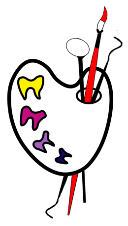
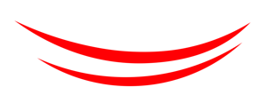

Логотип — обновление старого
Четвёртый круг: старый цветной логотип, перерисованный заново. Композиция та же — палитра, зубы-краски, кисть и зеркало в отверстии, двойная улыбка снизу, — но линии ровные, зубы одной формы, инструменты не торчат снизу, цвета спокойнее, название читается.

